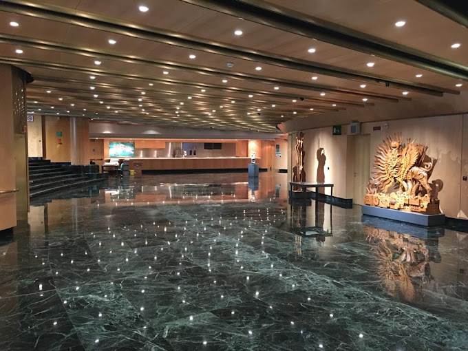
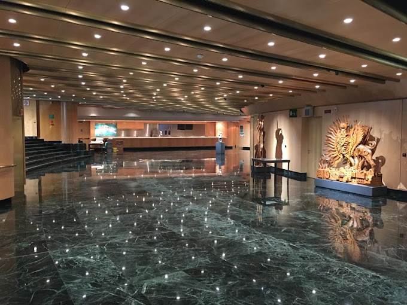
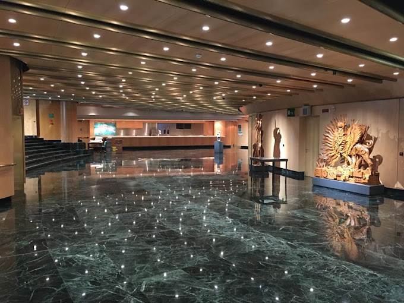

Our main venue for both the main conference and workshops is Banca D'Italia's reception hall Centro Donato Menichella (Largo Guido Carli 1, 00044 Frascati RM).

We provide a free shuttle service to and from the venue during the event (Sept. 25th, 26th, 27th).
Shuttles will depart/arrive near the train station "Roma Termini" (Via Cavour 15, in front of Hotel
Mediterraneo). Both this location and timeslots are subject to change, precise details will be provided at a later date.
The trip will last
between 30 and 60 minutes, depending on traffic conditions.
On Friday 27th, the conference will end early at 16:30. Shifted timeslots are highlighted in orange.
| departure: Via Cavour 15 (Roma Termini) | |||
|---|---|---|---|
| 25th | 26th | 27th | |
| Shuttle I | 8:30 | 8:30 | 8:30 |
| Shuttle II | 9:00 | 9:00 | 9:00 |
| Shuttle III | 12:30 | 12:30 | 12:30 |
| Shuttle IV | 12:30 | 12:30 | 12:30 |
| departure: Centro Menichella (Frascati) | |||
|---|---|---|---|
| 25th | 26th | 27th | |
| Shuttle I | 14:00 | 14:00 | 14:00 |
| Shuttle II | 14:30 | 14:30 | 14:30 |
| Shuttle III | 17:00 | 17:00 | 16:30 |
| Shuttle IV | 17:30 | 17:30 | 17:00 |